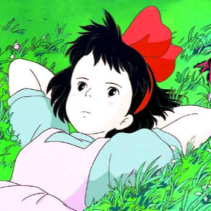
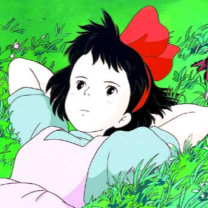

VOLTAR
VOLTAR
VOLTAR
VOLTAR
1989 | 103 min | Aventura/Fantasia
O Serviço de Entregas da Kiki é uma longa-metragem de animação japonesa de 1989 produzido, escrito e dirigido por Hayao Miyazaki. Foi o quarto filme lançado nos cinemas pelo Studio Ghibli. O filme ganhou o prêmio Animage Anime Grand Prix em 1989. O Serviço de Entregas da Kiki foi baseado na obra de mesmo nome de Eiko Kadono, e foi a primeira de uma série que foi publicada pela Fukuinkan Shoten em 1985. De acordo com Miyazaki, o filme abraça a independência e a confiança entre as jovens adolescentes japonesas. Indo além do tema sobre a idade, seu trabalho lida com a natureza da criatividade e talento, e a dificuldade central que cada pessoa encontra em si mesma ao crescer e se tornar um indivíduo único, seja através da sorte, trabalho árduo ou confiança: o filme explora as mesmas questões que o filme Sussurros do Coração.
Ao completar 13 anos, seguindo a tradição de todas as bruxas, Kiki deve se mudar para uma cidade na qual não haja nenhuma bruxa e passar lá um ano morando sozinha em uma espécie de “estágio”. Após achar uma bela cidade à beira mar, Kiki e seu gatinho Jiji tentam se adaptar à nova vida.
No Brasil o filme chegou em BluRay e DVD através do box da Coleção Studio Ghibli Vol. 2 lançado pela distribuidora Versátil Home Video em versão dublada e legendada. Atualmente está disponível junto a mais outros 20 filmes do Studio Ghibli na plataforma de streaming Netflix.
 
